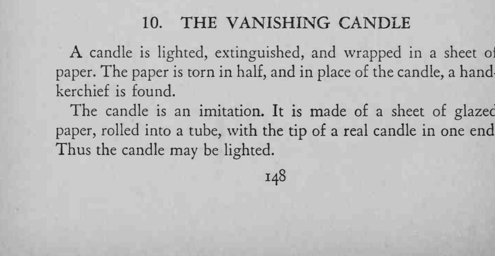
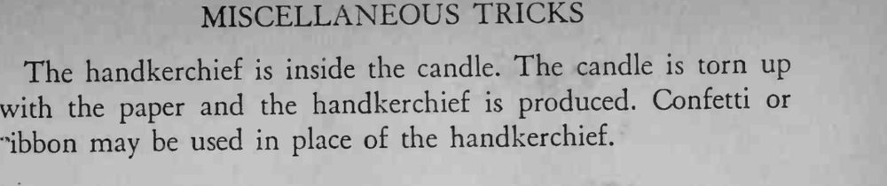

点燃又熄灭的蜡烛被纸包起来，纸一撕两半，蜡烛不见了，里面是一条手帕。
纸筒要卷紧，撕的时候手势要利落，别露出纸筒里的东西。


candle is lighted, extinguished, and wrapped in a sheet of paper. The paper is torn in half, and in place of the candle, a handkerchief is found. The candle is an imitation. It is made of a sheet of glazed paper, rolled into a tube, with the tip of a real candle in one end. Thus the candle may be lighted. The handkerchief is inside the candle. The candle is torn up with the paper and the handkerchief is produced. Confetti or "ibbon may be used in place of the handkerchief.